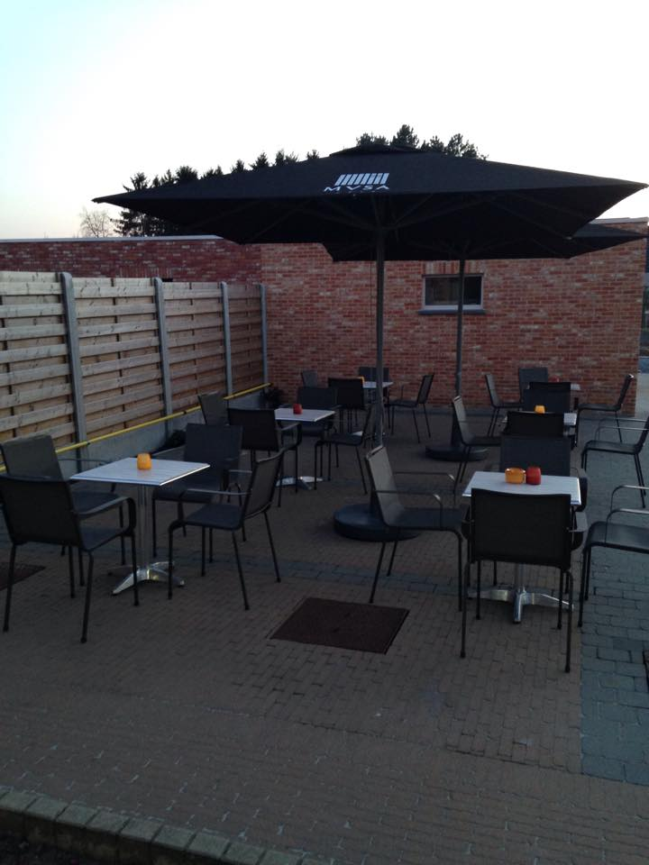
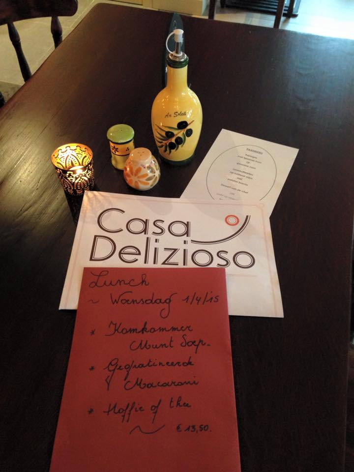
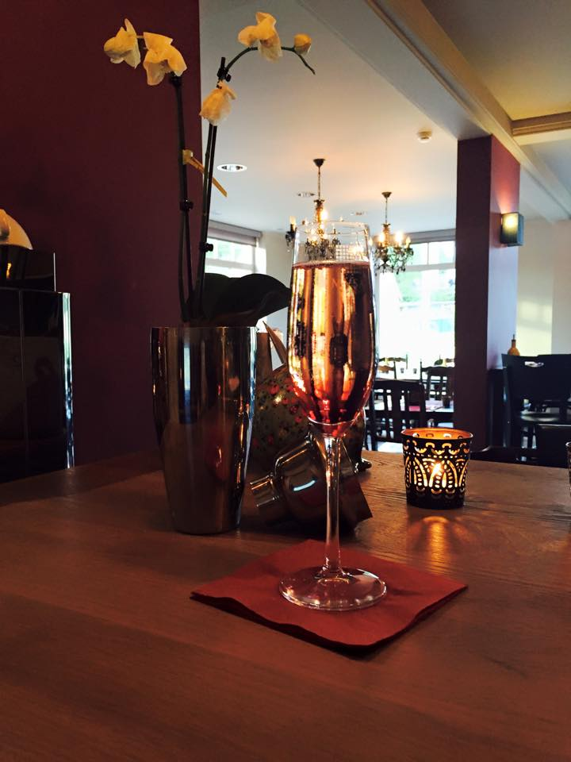

Wat
Casa Delizioso is een zuiders eethuis dat gelegen is aan de drie grensstreken in Tessenderlo. Het ligt nabij Okselaar.
Proef onze gerechten
U kan bij ons komen genieten van zuiderse gerechten: verse pasta's, tapas, en nog veel meer lekkers.
U kan steeds reserveren op het nummer 013/304944



